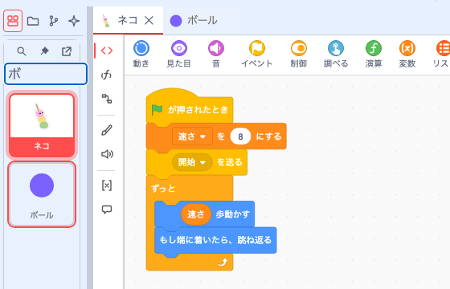
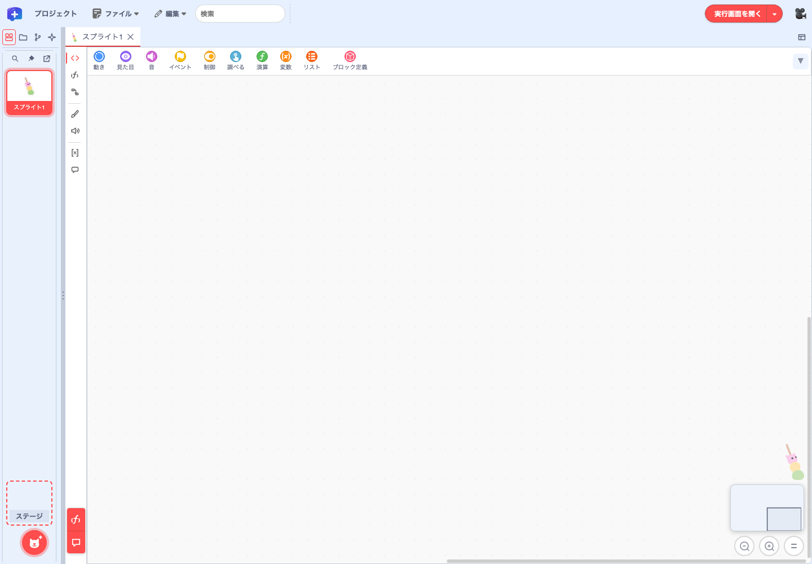
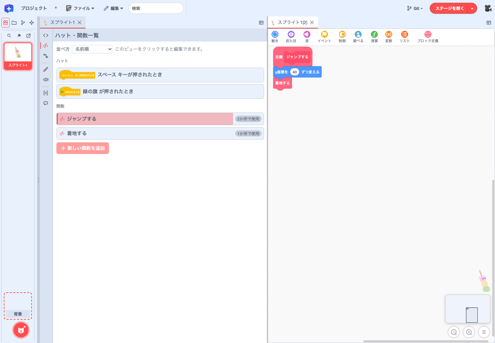
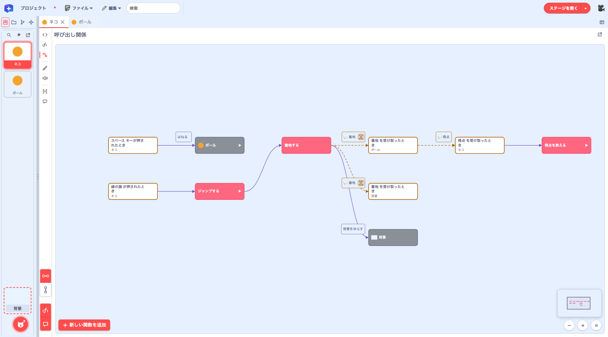
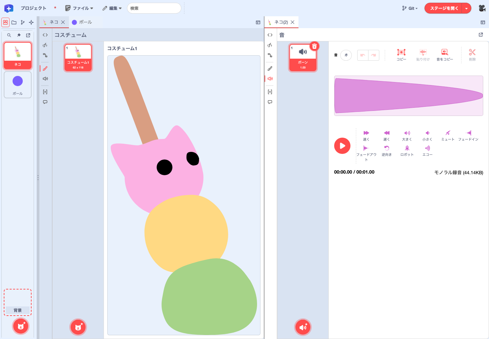
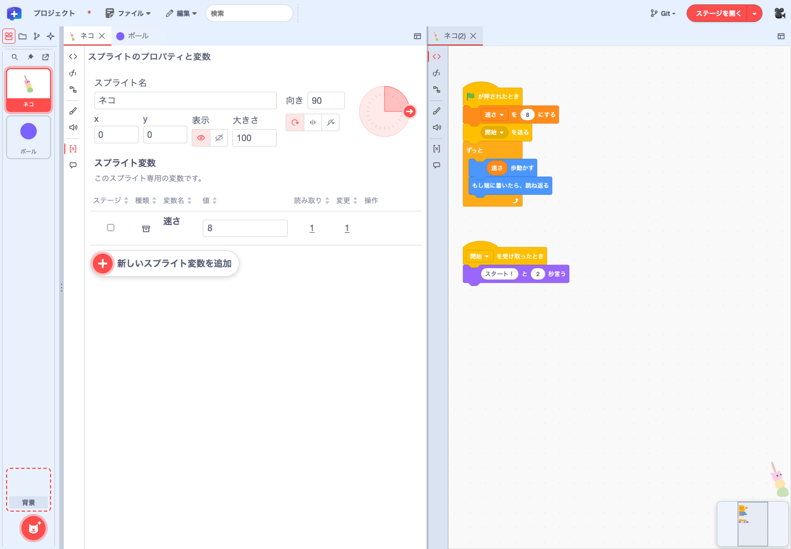
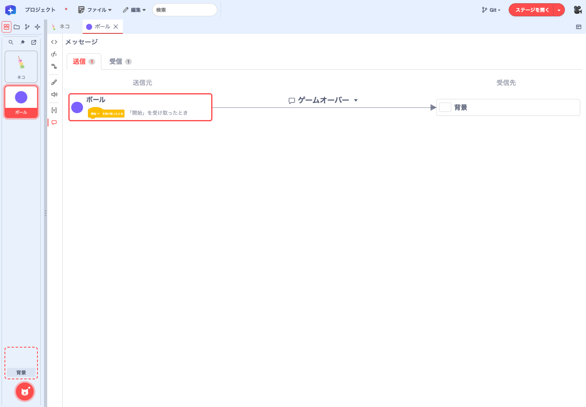
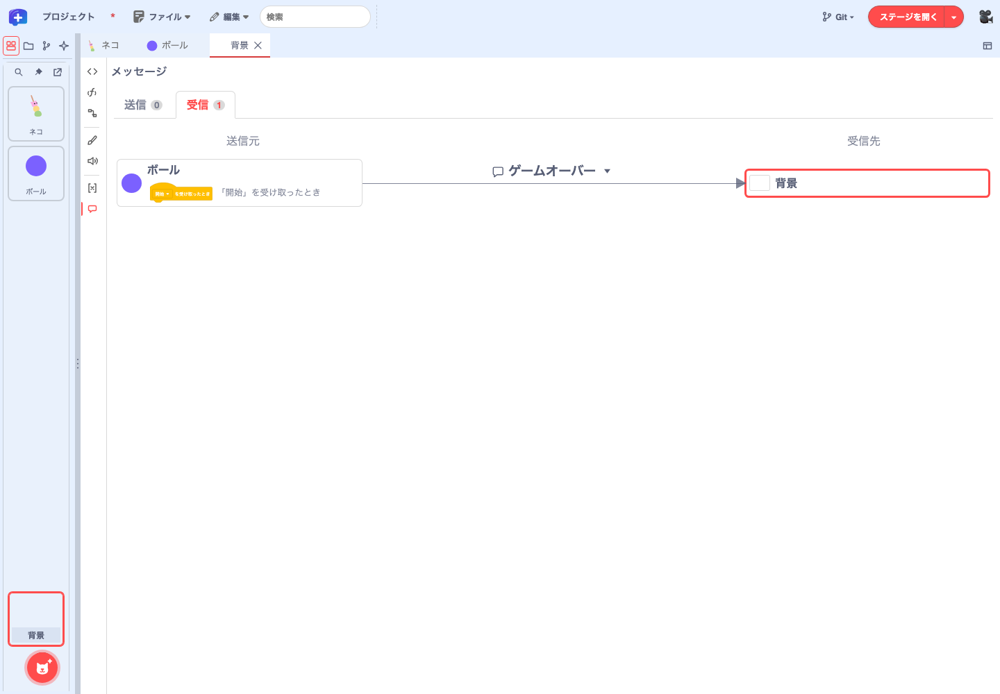

機能ガイド 3/12 · 2026年11月15日更新
スプライトと背景を編集する
左のスプライト一覧で対象を選び、編集パネル左端に縦に並ぶアイコンで、自由配置のコード・ハットと関数の一覧・呼び出し関係・コスチューム・音・変数・メッセージを切り替えます。
3.1 スプライト一覧で探す・固定する
画面左端のアクティビティバーで「スプライト一覧」を選ぶと、スプライトのタイルが並ぶ一覧が開きます。ここで編集する対象を選びます。一覧の上部には「スプライトを検索」「スプライト一覧を固定表示」「アンドック」のボタンがあります。「スプライトを検索」に名前の一部を入力すると、最初に一致したタイルまでスクロールし、そのタイルを枠で強調します。一覧の下にある「背景」のタイルからは、ステージの背景を開けます。

ピンのボタンで固定表示を解除すると、ピンに斜線が付き、一覧は左端に収まります。左端にポインターを置くか「スプライト一覧を展開」を押すと、一覧が開きます。固定表示中に一覧の幅を広げると、タイルが複数列に並びます。作品全体からブロックや素材を探すときは、メニューバーの検索欄を使います。
スプライトのタイルを右クリックすると、「開く」「複製」「書き出し」「スプライト名の変更」「削除」「フォルダーを作成」のメニューが開きます（右クリックメニュー）。同じスプライトを複数のタブで開いているときは、「開く」のサブメニューに「ネコ」「ネコ(2)」のように開いているタブが並び、前面に出すタブを選べます（スプライトのタブ）。
3.2 スプライトのタブと編集パネルのアイコン
一覧でスプライトを選ぶと、編集パネルの上段にそのスプライトのタブが開きます。開いたスプライトはタブで切り替えます。タブを右クリックすると「新しいタブで開く」と「スプライト名の変更」を選べます。「新しいタブで開く」を選ぶと、同じスプライトが「ネコ(2)」のような番号付きのタブでもう1つ開き、タブごとに別の内容（たとえばコードとコスチューム）を表示できます。
編集パネルの左端には、アイコンが縦に7つ並び、線で3つのまとまりに分かれます。上から「自由配置」「ハット・関数一覧」「呼び出し関係」、「コスチューム」（背景では「背景」）「音」、「変数」（背景では「グローバル変数」）「メッセージ」です。「自由配置」は、スプライトのすべてのスクリプトを置いたコード領域です。「ハット・関数一覧」と「呼び出し関係」はハットと関数を一覧する・呼び出し関係を見るで説明します。選んでいるアイコンは色と左の線で示されます。アイコンの名前はポインターを重ねると表示されます（スプライトの「変数」には「スプライトのプロパティと変数」と表示されます）。

3.3 ハットと関数を一覧する・呼び出し関係を見る
「ハット・関数一覧」を開くと、開いているスプライトまたは背景のスクリプトが「ハット」と「関数」に分かれて並びます。ハットには、ハットブロックの絵と「スペース キーが押されたとき」のような名前が表示されます。関数には、ブロック定義の名前と「2か所で使用」のような使用数が表示されます。拡張「TurboWarp-Named-Functions」の名前付き関数は、「TurboWarp Plus 名前付き関数」の見出しの下にまとまります。並び順は「並べ方」で「名前順」「Z順（行ごと）」「N順（列ごと）」から選びます。使用数を押すと、その関数を使っている箇所の一覧が開き、選んだ箇所へ移動できます。
スクリプトを1つだけ表示して編集する
一覧でハットや関数を選ぶと、スプライトの右側にパネルが分割され、番号付きのタブ（例：「スプライト1(2)」）に、そのスクリプトだけを表示したコード領域が開きます。ほかのスクリプトは隠れているだけで、作品からは消えません。この領域には左端のアイコンがなく、ブロックパレットや右クリックメニューは「自由配置」と同じように使えます。別の項目を選ぶと同じ領域の表示が切り替わり、一覧では表示中の項目が強調されます。表示中のスクリプトを削除すると、この領域は閉じます。

関数を呼ぶブロックの右クリックメニューにある「この関数を表示」からも、同じ領域に関数を開けます（右クリックメニューで操作する）。ハットの右クリックメニューの「折りたたみ」で、スクリプトをハットだけの表示にすることもできます。
関数を追加する
一覧の下の「＋ 新しい関数を追加」を押すと、「関数名」と「種類」を入れるダイアログが開きます。種類は「標準（ブロック定義）」か「TurboWarp-Plus の名前付き関数」です。「追加」を押すと、関数が既存のスクリプトの下に作られ、右側の領域で開きます。標準の関数は引数のないブロック定義になります。同じ名前の関数がすでにあるときは作れません。名前付き関数を選んだときは、拡張「TurboWarp-Named-Functions」が読み込まれていなければ、その時点で読み込みます。
関数の呼び出し関係を図で見る
「呼び出し関係」を開くと、関数を箱、呼び出しを矢印で表した図が表示されます。ハットのスクリプトなど、関数以外のスクリプトから呼ばれる関数には ▶ の印が付きます。ほかのスプライトや背景で定義したグローバルな名前付き関数も、呼び出しでつながっていれば、定義した側の名前とともに表示されます。

箱にポインターを重ねると、つながる矢印が強調されます。開いているスプライトや背景の関数の箱を押すと、その関数が右側の領域で開きます。右上のボタンで流れを「左から右 (LR)」と「上から下 (TD)」に切り替え、右下のボタンで拡大・縮小します。左下の「＋ 新しい関数を追加」からも関数を作れます。
3.4 コスチュームと音を編集する
タブ右上の「編集パネルのレイアウト」から「パネルを横に分割」を選ぶと、同じスプライトが右側に番号付きのタブ（例：「ネコ(2)」）で開きます。分割してできた左右の区画を、このガイドではペインと呼びます。左で「コスチューム」、右で「音」を選べば、コスチュームと音を並べて扱えます。「音」で素材を選ぶと波形が表示され、その下の再生ボタンで試聴できます。音がない場合は、左下のボタンから追加します。
編集画面が表示されるのは、操作しているペインだけです。もう一方のペインには、選んでいるコスチュームや音のプレビューが表示されます。そのペインを操作すると、そちらが編集画面に切り替わります。
開いていた編集画面と選んだ素材は、ペインごとに保持されます。録音中にほかのスプライトやタブへ切り替えても録音ダイアログは閉じず、録音した音は録音を始めたスプライトに保存されます。
コスチュームと背景の編集画面では、上部の「フォント…」から作品のフォントを管理できます。登録したフォントは、どちらの画面でも文字ツールのフォント一覧から選べます。

開発中 開発版（ローカル統合版）では、操作していないペインのコスチュームプレビューの高さに上限を設けています。

3.5 プロパティ・変数・リストを編集する
「変数」を開くと、「スプライトのプロパティと変数」の見出しの下に、スプライトのプロパティと「スプライト変数」の一覧が表示されます。
- プロパティ：スプライト名、x、y、表示（目のアイコンで表示、斜線付きの目で非表示）、大きさ、向き、回転方法（自由に回転・左右のみ・回転しない）を編集します。
- 変数の一覧：開いている対象が持つ変数とリストを表示します。スプライトの「変数」にはそのスプライト専用のスプライト変数が、背景の「グローバル変数」には作品全体で使うグローバル変数が並びます。クラウド変数には名前の右に雲のアイコンが付きます。
- 値の変更：値を入力してEnterを押すか、入力欄からフォーカスを外すと確定します。確定前にEscを押すと入力を取り消せます。
向きは数値で入力するほか、ダイヤルの円周にある矢印をドラッグして指定できます。回転方法は、向きの入力欄の下にある3つのアイコンで切り替えます。ダイヤルで選べる向きは、「自由に回転」では任意の方向、「左右のみ」では左か右だけです。「回転しない」ではダイヤルが固定され、移動の向きは数値で変更します。
変数とリストを一覧で確かめる
一覧の列は「ステージ」「種類」「変数名」「値」「読み取り」「変更」「操作」です。「ステージ」のチェックボックスで、ステージに値を表示するかを切り替えます。「種類」は変数を箱、リストを表のアイコンで示します。列の見出しを押すと並べ替えられます。
「読み取り」「変更」の列には、その変数を読み取るブロックと変更するブロックの数が表示されます。件数を押すと、メニューバーの検索が「変数へのアクセス」で絞り込んだ状態で開き、該当するブロックへ移動できます（作品全体を検索する）。
リストの「値」には先頭5項目が表示され、残りの項目数は「+1」のように示されます。「値」の列にある、鉛筆アイコン付きの「編集」を押すと「リストを編集」ダイアログが開き、項目の書き換え、上下の移動、削除、「項目を追加」ができます。「保存」を押すと変更が反映されます。

パネルを横に分割し、片方で「変数」、もう片方で「自由配置」を開くと、値を見ながらコードを編集できます（パネルの分割）。
変数やリストを作る・名前を変える・削除する
パネル左下の「新しいスプライト変数を追加」（背景では「新しいグローバル変数を追加」）を押すと、作成のダイアログが開きます。上部の「変数」「リスト」のタブで、作るものを選んで名前を入力し、「作成」を押します。グローバル変数を作るときは、「クラウド変数」も選べます。
変数の行にポインターを重ねるか、キーボードでフォーカスすると、「操作」の列に「変数名を変更」と「変数を削除」のボタンが表示されます。
- 名前が空のときや、同じ名前がすでに使われているときは、理由が表示されて確定できません。スプライト変数は、そのスプライトの変数とグローバル変数の名前と比べます。グローバル変数は、すべてのスプライトの変数とグローバル変数の名前と比べます。リストはリスト同士で比べます。
- 削除の前には確認が表示されます。ブロックで使用中の変数は削除できません。「読み取り」「変更」の件数が両方とも0になるように、先に参照を外します。
クローンごとの値を確認する
実行中にクローンが作られると、「スプライトのプロパティと変数」の見出しの右側で、表示する個体を選べます。5体までは番号を直接選び、6体以上では左右の矢印で移動するか、中央の一覧から番号を選びます。選んだクローンの位置、向き、大きさ、表示、回転方法と、スプライト変数の値を編集できます。スプライト名は読み取り専用です。プロパティと値の変更はその実行中だけ有効で、選んでいたクローンが消えると元のスプライトの表示に戻ります。
クローンを選んでいるときも、「読み取り」「変更」の件数は元のスプライトのコードから数え、件数から使用箇所を検索できます。変数の追加・名前の変更・削除は、元のスプライトとすべてのクローンに反映されます。ステージへの表示をオンにすると、表示されるのは元のスプライトの値です。
一時変数を確かめる
一時変数拡張（Temporary Variables）を読み込んでいるか、そのブロックを使っているときは、変数の一覧の下に「スレッド変数」の表が加わります。背景の「グローバル変数」には「ランタイム変数」の表も加わります。表には、コード中で名前を固定テキストで書いた変数と、その変数に値を入れる関数（「定義した関数」）が並びます。ランタイム変数では、読み取る関数（「参照している関数」）と書き換える関数（「書き換えている関数」）も件数付きで並びます。
値は、デバッガーで作品を一時停止したときに「値」の列に表示されます。スレッド変数の値には、どのスプライト（クローン）のどのスレッドの値かが添えられます。関数名やハットの絵を押すと、その関数やスクリプトがコードの中央に表示されます。
3.6 メッセージの送受信を確かめる
「変数」の下の「メッセージ」を開くと、開いているスプライトまたは背景が送るメッセージと受け取るメッセージを、「送信」と「受信」の2つのタブで確かめられます。タブの数字は、それぞれのメッセージの数です。メッセージを送らず受け取るだけの対象では、はじめから「受信」タブが開きます。
どちらのタブも関係図で表示します。メッセージごとに、左の「送信元」から右の「受信先」へ矢印が伸び、両端にスプライトや背景のサムネイルが並びます。矢印の上にある吹き出しアイコンの隣がメッセージ名です。開いているスプライトや背景には、アクセント色の太い枠が付きます。


- 送信元には、そのメッセージを送るスクリプトのハットを小さく描き、「緑の旗が押されたとき」のように、どこから始まるスクリプトかを添えます。これを押すと（ツールチップは「このブロックを開く」）、そのスクリプトの送るブロックの位置へコードが移動します。
- スプライトや背景の名前を押すと、その対象のコードを開きます。
- 受け取るブロックがないメッセージは受信先の側に「受け取るブロックがありません」、送るブロックがないメッセージは送信元の側に「送るブロックがありません」と、警告の印を付けて表示します。
メッセージの名前を変える
関係図のメッセージ名の右にある ▼ を押し、「メッセージ名を変更」を選ぶと、ダイアログで名前を変えられます。メッセージは作品全体で共有されるため、名前を変えると、送る・受け取るすべてのブロックの表示が変わります。同じ名前のメッセージがすでにある場合は変更できません。
作品全体の検索でメッセージ名を探すときも、このパネルと同じ基準で送信・受信を判定します（検索対象を選ぶ）。
3.7 背景を編集する
スプライト一覧の下にある「背景」のタイルを選ぶと、ステージの編集パネルが開きます。タブには一覧と同じく「背景」と表示されます。
編集パネル左端のアイコンはスプライトと同じ並びですが、「コスチューム」の代わりに「背景」、「変数」の代わりに「グローバル変数」があります。「背景」でステージの背景画像を、「自由配置」でステージのスクリプトを、「音」でステージの音を編集します。「グローバル変数」には作品全体で使う変数とリストが並び、「メッセージ」の関係図には作品全体の送受信が表示されます（メッセージの送受信を確かめる）。
背景のタイルを右クリックすると、「開く」と「ステージを書き出し」を選べます。「ステージを書き出し」でステージを .stage3 に書き出せます（スクリプトとステージを別作品へ転送する）。